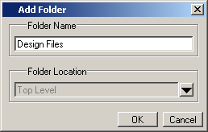
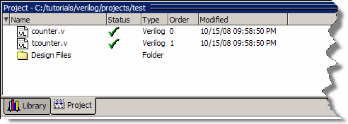
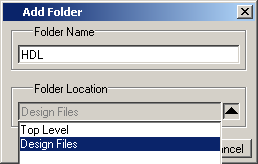
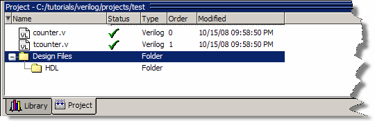

As shown
previously, the Add items to the Project dialog box has an option
for adding folders. If you have already closed that dialog box,
you can use a menu command to add a folder.
Procedure
- Add a
new folder.
- Right-click
in the Projects window and select .
- Type “Design
Files” in the Folder Name field (Figure 1).
Figure 1. Adding New Folder
to Project
- Click OK.
The new
Design Files folder is displayed in the Project window (Figure 2).
Figure 2. A Folder Within a
Project
- Add a
sub-folder.
- Right-click
anywhere in the Project window and select .
- Type “HDL”
in the Folder Name field (Figure 3).
Figure 3. Creating Subfolder
- Click
the Folder Location drop-down arrow and select Design Files.
- Click OK.
A ’+’
icon appears next to the Design Files folder
in the Project window (Figure 4).
Figure 4. A folder with a Sub-folder
- Click
the ’+’ icon to see the HDL sub-folder.